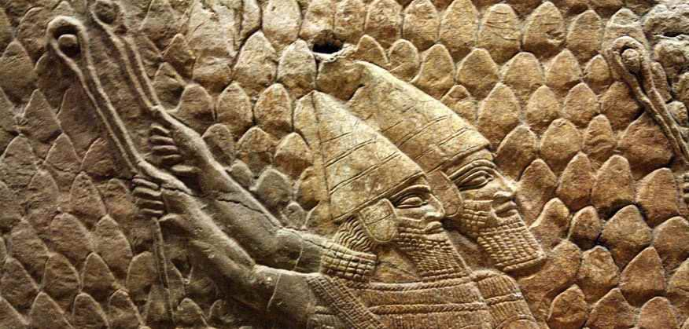

A Direct Hit on the Target
Exod. 35:34 …and He hath put in his heart to teach…
וּלְהוֹרֹת נָתַן בְּלִבּוֹ
U-LEHOROT NATAN BE-LIBO
Called to make a sanctuary for God Most High, the Israelite artist Bezalel also received, together with his calling, the gift of TEACHING others. Three words are related to the word "TO TEACH": ORE (parent), MORE (teacher), YORE (archer).
On how to find words of the same root in the Hebrew text of Scripture, see here.
The word "TO TEACH" that we find in this passage of Scripture is להורות (Heb. LEHOROT).
להורות / ירה LEHOROT / YARAH (03384): 1. to throw; 2. to shoot (an arrow); 3. to water, give to drink; 4. to instruct, teach, point out, direct, prescribe.
In the articles "The School of Bezalel. The Calling to Teach" and "The School of Bezalel. The Parent" you will find the beginning of our look at this word and at words of the same root, which help us enter more deeply into the essence of the process of LEHOROT (Heb. "to teach", Exod. 35:34).
In this article we will look at the word YORE (archer).
To shoot means to send towards a target. This interpretation follows from the meaning of the root ירה (yud-resh-hei). To shoot means to send (an arrow) with great force, giving it direction.
1. The target
An arrow always has a target it must reach. It is no accident that lehorot means to direct, to point out. That is, the very action of LEHOROT (to teach) contains direction and aim.
The Creator does nothing without purpose. His every action has an aim. All creation has a design and a purpose, as it is written:
"So shall My word be that goeth forth out of My mouth: it shall not return unto Me void, but it shall accomplish that which I please, and it shall prosper in the thing whereto I sent it." Isa. 55:11
כֵּן יִהְיֶה דְבָרִי אֲשֶׁר יֵצֵא מִפִּי לֹא־יָשׁוּב אֵלַי רֵיקָם
כִּי אִם־עָשָׂה אֶת־אֲשֶׁר חָפַצְתִּי וְהִצְלִיחַ אֲשֶׁר שְׁלַחְתִּיו׃
KEN YIHYE DEVARI ASHER YETSE MI-PI LO-YASHUV ELAI REIKAM KI IM-ASA ET-ASHER HAFATSTI VE-HITSLIAH ASHER SHLAHTIV
The life of man, created in the likeness of God, certainly has a purpose. Accordingly, man's creative work and his art also have a purpose.
In the book of Judges (20:16) the Bible speaks of the accuracy of the sons of Binyamin in slinging stones: "Among all this people there were seven hundred chosen men lefthanded; every one could sling stones at an hair breadth, and not miss." So accurate was their aim, so clearly did they see the target.
2. The strength to reach the target

To shoot means to send (an arrow) with great force.
The range of a modern bow is 90 m, a rather modest result compared with the archers of antiquity. The draw weight of a sports bow is about 20 kg.
The ancient bows found by archaeologists were much more powerful, with a draw weight of up to 80 kg!.. So by no means every strong modern man could handle one.
Homer in the "Odyssey" bears witness to this "stiff bow of Odysseus". Not one of Penelope's suitors was able to string the bow of the "mighty man that Odysseus was". Even in ancient Greece not everyone was equal to it.
"…even as a skilled bard strings a new peg of his lyre and makes the twisted gut fast at both ends, so did Ulysses string his bow without any effort, and as he did so he took it in his right hand to prove the string, which sang sweetly under his touch like the twittering of a swallow."
Homer, "Odyssey", Book 21 (tr. Samuel Butler)
3. The arrow does the will of the archer
This hardly needs any special explanation. Clearly an arrow does not choose its target at its own discretion, "but does the will of the one who sent it".
Interestingly, in Hebrew the word for sinning is bound up with losing direction and, as a result, missing the target: HATA (sin) literally means missing the mark. If we turn aside from the target set for us by the Creator, we miss it, as it is said:
"All we like sheep have gone astray; we have turned every one to his own way…" Isa. 53:6
כֻּלָּנוּ כַּצֹּאן תָּעִינוּ אִישׁ לְדַרְכּוֹ פָּנִינוּ
KULANU KA-TSON TA'INU ISH LE-DARKO PANINU
Turning aside from the target is sin
So what shall we say?
When we speak of Bezalel's TEACHING in the light of the deep meaning of the word להורות (Heb. LEHOROT), we discover that this teaching has a target. And this target is set by the Creator, who gave Bezalel the ability to TEACH. This teaching has no meaning if it does not give the ability to see the target. It also gives the strength to reach the target and the direction of movement towards it.
In the next post we will look at the word MORE (teacher), of the same root as LEHOROT (to teach).
Author: Ephraim Kalish / Torah-Art
Other articles on the subject:
The School of Bezalel. The Calling to Teach
The School of Bezalel. The Parent